Dave's plotting (and other) functions
dave_plotting_functions.RmdReaders who just want to see how the plotting functions work should have a quick look at Section 1.2 to get some sense of the example/dummy data used in this vignette and then skip to Section 4 or later.
This vignette aims to show the main functionality of the functions that I (Dave) have developed around survey data summaries - doing those summaries, using the data and dictionary from those summaries to prepare survey data for further analysis/exploration, making plots in the same style (and, coming later, making other kinds of plots using the same theme and/or colour palettes).
Setup
Packages for this vignette
Load the OMESurvey package and a couple of other
packages (inoffensive, commonly-used ones hopefully) that will be
useful.
Some dummy data
Now create some dummy survey data and a corresponding data dictionary to use in the vignette. The data contains the following variables:
-
respondent_id: a unique respondent identifier (included in the raw data but deliberately omitted from the dictionary to demonstrate handling of extra variables). -
StartDate: a survey start date (also omitted from the dictionary so that extra_vars behaviour can be illustrated). -
school_type: a categorical grouping variable with values Type A and Type B. -
gender: a second categorical grouping variable. -
q_satisfaction,q_belonging, andq_support: three Likert-style attitude questions with the same response scale (to demonstrate categorical summaries andsummary_plot_stacked_bar()). -
study_hours: a numeric survey response giving estimated weekly study hours. -
wellbeing_scoreandconfidence_score: numeric score variables on a 0–10 scale (used to demonstrateOME_boxplot()andsummary_plot_boxplot()). -
q_welcome_support_helpful: A Likert-style question about whether they found welcome week support helpful. -
q_finance_support_used,q_finance_support_helpful: a yes/no branching variable indicating whether the respondent used finance support services and, for those who answered Yes, a Likert style question about whether they found it helpful. -
q_academic_support_used,q_academic_support_helpful: as above for academic support. -
q_other_comments: a free-text response variable (used to demonstrate how text fields are handled in the report).
The dummy data has been set up to
- use the -888 branching sentinel/missing code as should be the case for real OME survey data,
- include some -999 missing values,
- include a few -777 invalid values, an out-of-range numeric value, and a non-allowed categorical response.
These are included so that the validation and diagnostic parts of the report have something meaningful to show and the examples of plotting functions can show their capabilities.
Preview the example inputs
Before rendering a report or preparing the data, it is useful to briefly inspect both the raw survey data and the dictionary.
Preparing the data and dictionary is part of pre-processing, so this
should need doing once only and is something that readers of this
document will not have to worry much about. Guidance on doing that is in
the Preprocessing SOP (which, at time of writing, is the Word document
20260408_SOP_Pre-processing in the/a folder of SOPs). This
includes information about constructing the data dictionary and what the
-999/-888/-777 missing codes mean / are used for. An exception to this
might be if you are doing a detailed data analysis (say, for a paper)
and want to take a copy of the data dictionary to edit so that you can
automatically prepare the data in a way that’s useful for your analysis
(rather than in a way that’s useful for summarising the whole survey,
which is the intention of the main data dictionary)
Save example inputs to temporary files
For the purposes of the vignette, we save the dummy data as a CSV
file and the corresponding dictionary as an Excel workbook. The
dictionary is written to a sheet called “example_survey”, which is the
sheet name we will pass to render_survey_summary() and
survey_prepare_data() below.
#> [1] "/tmp/RtmpvGQ0Dv/example_data_1dcc77e7a3e4.csv"
#> [1] "/tmp/RtmpvGQ0Dv/example_survey_dictionary_1dcc487da357.xlsx"Automated summary report
One can now use render_survey_summary() to create an
HTML summary report from the dummy survey data and dictionary, using
code along the lines of the following. This isn’t done here as it’s
tricky to implement in a vignette and it’s not the main point of this
document. (There’s more info in the pre-processing SOP.)
render_survey_summary(
data_path = <path to data file>,
dict_path = <path to dictionary file>,
dict_sheet = "example_survey",
output_file = <filename for output file, e.g. 'year_X_summary.html'>,
output_dir = <path to folder for output file>,
output_title = "Year X pupil survey summary",
output_author = "A Nonymous"
)Prepare the data for further analysis
The report function first prepares the data internally (turning a csv/xlsx data file into a better-structured R data frame, e.g. ensuring that factors have the right levels) and then uses that data frame (and other validation information based on the data and data dictionary) to build the report. But it seems likely to be useful to have the data preparation phase separated, for further analysis and plotting.
The function survey_prepare_data() can be used to read
the same csv/Excel data and Excel data dictionary, then validate/coerce
the dictionary-backed variables to the appropriate numeric/factor types.
The function returns a list containing several objects: most important
for our purposes are the data (data) and a data frame that
contains lots of validation information (validation_df).
(There are also lists of messages that arose during the data &
dictionary reading and processing, a list version of the validation
information and other objects concerning the treatment of variables in
the source data but not in the dictionary.)
prep <- survey_prepare_data(
data_path = data_path,
dict_path = dict_path,
dict_sheet = "example_survey"
)
survey_data <- prep$data
validation_df <- prep$validation_dfIn order to further customise the data this produces, one can make and edit a copy of the data dictionary. This allows full control over which variables are/aren’t included, which values are treated as allowed/valid, etc. (One can also have establishment characteristics data merged into the survey data - see the SOP for info on how to do that, for now at least.)
We can take a quick look at the prepared data; noting particularly
the names of the variables: those in the dictionary have the raw
character-based version of the variable with the _raw
suffix and the original variable name containing the
tidied-and-coerced-to-type variable, and those not mentioned in the
dictionary are appended with _asis (emphasising that
they’ve not be processed in any way, in accordance with the default for
the extra_vars option for
survey_prepare_data()).
The validation output summarises the checks carried out for each
dictionary-backed variable. (Here we show only some of the key columns
in the validation_df output.)
Categorical variables: stacked bar charts
Single-question categorical plot with
OME_stacked_bar()
OME_stacked_bar() is used for plotting one categorical
survey response, optionally broken down by a grouping variable. Here we
show satisfaction by school type
OME_stacked_bar(
dat = survey_data,
response_var = q_satisfaction,
group_var = school_type,
count_style = "both",
titleText = "Satisfaction by year group"
)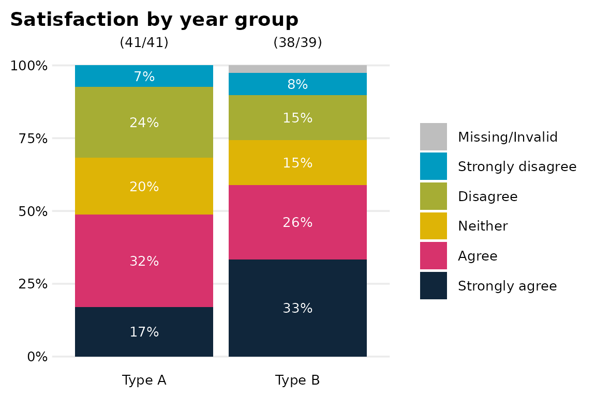
The default fill colours for the bars are (the ‘distinct’ or
‘qualitative’ palette type from
OMESurvey::get_OME_colours()), designed to be as
distinct/easy-to-distinguish as possible. This palette can be modified
manually by passing, for example,
OMESurvey::get_OME_colours(n=5, type='divergent') as the
colo argument of the plotting function. But the validation
output already has that set up (from the info in the data dictionary)
and ready to use:
validation_df |> filter(variable=="q_satisfaction") |> pull(colo) |> (\(x) x[[1]])()
#> Strongly disagree Disagree Neither Agree
#> "#66C0D7FF" "#3B7389E5" "#10263BCC" "#732C53E5"
#> Strongly agree
#> "#D7336CFF"(Aside: the (\(x) x[[1]])() at the end of the code
extracts the first item from a list - it is needed because of how the
validation info is stored, which in turn is needed to avoid some
technical issues that result from what R tries to do when you include a
vector as an element of a vector. The colo variable in validation_df is
a list-column, with entries either NA or a vector describing the
palette.)
Passing this to OME_stacked_bar() we get
OME_stacked_bar(
dat = survey_data,
response_var = q_satisfaction,
group_var = school_type,
colo = validation_df |> filter(variable=="q_satisfaction") |> pull(colo) |> (\(x) x[[1]])(),
count_style = "both",
titleText = "Satisfaction by year group"
)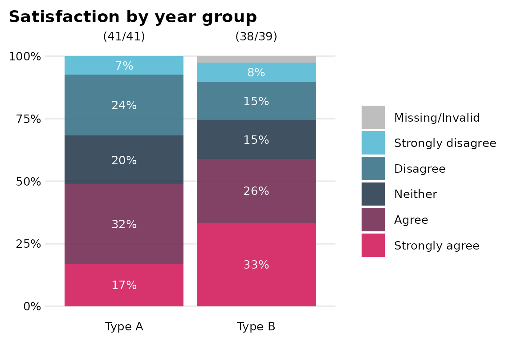
This is a common recurring theme for factors and stacked bar charts: you need to tell the plotting function what colour palette to use, but the appropriate one is always available through the validation data frame:
(This method is preferable to passing
OMESurvey::get_OME_colours(n=5, type='divergent') to the
plotting function’s colo argument because it returns a
named vector, which makes the matching of levels and colours less likely
to go wrong in some unlikely-but-realistic edge-case scenarios.)
We can use the same method to look at the distribution of responses to another Likert-scale type question, here (i) grouped by a different variable and (ii) with missing/invalid values excluded from the stacked bars (but still indicated in the numbers in parentheses).
OME_stacked_bar(
dat = survey_data,
response_var = q_support,
group_var = gender,
na.rm = TRUE,
colo = validation_df |> filter(variable=="q_support") |> pull(colo) |> (\(x) x[[1]])(),
count_style = "both",
titleText = "Knowing where to get support, by gender"
)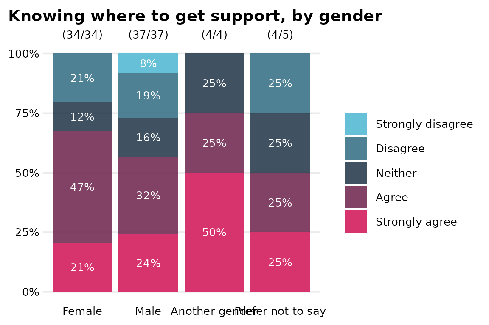
An example with routing taken account of
It is fairly simple to deal with routing here directly: filter the data appropriately before passing it to the plotting function.
survey_data |>
filter(q_finance_support_used == "Yes") |>
OME_stacked_bar(
response_var = q_finance_support_helpful,
colo = validation_df |>
filter(variable == "q_finance_support_helpful") |>
pull(colo) |>
(\(x) x[[1]])(),
na.rm = TRUE,
count_style = "both",
titleText = "Helpfulness of financial support"
)
(It’s possible to do this in a slightly more programmatic way, using
information about routing from validation_df, but for now
I’m leaving that out.)
Multi-question categorical plot with
summary_plot_stacked_bar()
summary_plot_stacked_bar() summarises several
categorical questions in one horizontal stacked bar chart. The variables
representing the questions must share the same response scale, like the
three attitude questions in the dummy data, for example.
(In principle one could pivot_longer() the data for the
relevant variables manually and then use OME_stacked_bar()
as above. But (i) this is a common task and (ii) it gets tricky when
dealing with missing values and/or survey branching conditions. Hence
the specially-written function.)
attitude_vars <- c("q_satisfaction", "q_belonging", "q_support")
# extract labels that match vars
attitude_labels <- validation_df |>
dplyr::filter(variable %in% attitude_vars) |>
dplyr::arrange(match(variable, attitude_vars)) |>
dplyr::pull(item_statement) |>
stats::setNames(attitude_vars)
# extract colour palette
attitude_colo <- validation_df |>
dplyr::filter(variable == attitude_vars[1]) |>
dplyr::pull(colo) |>
(\(x) x[[1]])()
survey_data |>
dplyr::select(q_satisfaction, q_belonging, q_support) |>
summary_plot_stacked_bar(
colo = attitude_colo,
labels_vec = attitude_labels,
count_style = "both",
titleText = "Attitudes to the programme"
)
A couple of things to note here:
- The vector/palette of colours
attitude_colois simply taken from one of the questions. (I could have something fancier, but it would have been hard to code. You need to make sure that the variables you are using have the same allowed values / response options!) - We need to
select()the variables to use in the data frame and then pass that to the plotting function. The function treats every variable in the data frame it receives as a question to be plotted, hence the need to select() them first. Or, of course, use a base R equivalent:survey_data[,c("q_satisfaction", "q_belonging", "q_support")] |> summary_plot_stacked_bar(...).
Ordering questions
The questions can also be ordered according to a response pattern
using the order_values option. For example, we can order by
the proportion of respondents answering "Agree" or
"Strongly agree". In this example we also show how to
extract some more details (the question labels as well as the colour
palette) from the validation_df rather than hard-coding
them.
attitude_vars <- c("q_satisfaction", "q_belonging", "q_support")
# extract labels that match vars
attitude_labels <- validation_df |>
dplyr::filter(variable %in% attitude_vars) |>
dplyr::arrange(match(variable, attitude_vars)) |>
dplyr::pull(item_statement) |>
stats::setNames(attitude_vars)
# extract colour palette
attitude_colo <- validation_df |>
dplyr::filter(variable == attitude_vars[1]) |>
dplyr::pull(colo) |>
(\(x) x[[1]])()
# plot
survey_data |>
dplyr::select(dplyr::all_of(attitude_vars)) |>
summary_plot_stacked_bar(
colo = attitude_colo,
labels_vec = attitude_labels,
count_style = "both",
order_values = c("Agree", "Strongly agree"),
titleText = "Attitudes ordered by positive responses"
)
Dealing with survey routing
It’s a bit awkward
The three helpfulness questions use the same response scale, but we do not have data for the same respondents across all the questions. Financial-support helpfulness is only relevant to respondents who used financial support, academic-support helpfulness is only relevant to respondents who used academic support, while the welcome-week helpfulness question is asked of everyone. Just plotting these variables is misleading as we do not respect the routing of the survey (i.e. the conditions in the data dictionary).
helpful_vars <- c(
"q_finance_support_helpful",
"q_academic_support_helpful",
"q_welcome_support_helpful"
)
# Extract labels and colours from validation_df
helpful_labels <-
validation_df |>
dplyr::filter(variable %in% helpful_vars) |>
dplyr::arrange(match(variable, helpful_vars)) |>
dplyr::pull(item_statement) |>
stats::setNames(helpful_vars)
helpful_colo <-
validation_df |>
dplyr::filter(variable == helpful_vars[1]) |>
dplyr::pull(colo) |>
(\(x) x[[1]])()
# plot
survey_data |>
dplyr::select(dplyr::all_of(helpful_vars)) |>
summary_plot_stacked_bar(
labels_vec = helpful_labels,
colo = helpful_colo,
count_style = "both",
titleText = "Helpfulness of support",
)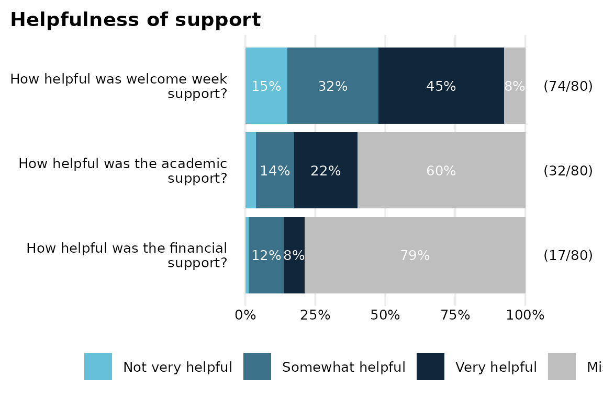
As the following table makes explicit, only 25 respondents were asked about the helpfulness of financial support. And then, only 20 of them gave a substantive response. The label “(20/80)” and the 75% missing bar/label do not convey this at all.
survey_data |>
janitor::tabyl(q_finance_support_helpful, q_finance_support_used) |>
janitor::adorn_totals(where="both") |>
janitor::adorn_title() |>
kable_narrow()| q_finance_support_used | ||||
|---|---|---|---|---|
| q_finance_support_helpful | Yes | No | NA_ | Total |
| Very helpful | 6 | 0 | 0 | 6 |
| Somewhat helpful | 10 | 0 | 0 | 10 |
| Not very helpful | 1 | 0 | 0 | 1 |
| NA | 1 | 61 | 1 | 63 |
| Total | 18 | 61 | 1 | 80 |
Simply removing missing values (using the na.rm=TRUE
option) is an improvement, and together with some explanation it might
be good enough for some purposes (especially if we tidy up the labels by
using the count_style="non-missing" argument or even omit
them using show_counts=FALSE). But it still doesn’t convey
all the information that we have. While most missing / non-allowed
values are because of routing, several are not; neither the labels nor
the plot properly capture that there are 20 substantive responses, 5
missing/invalid responses, 55 non-routed non-responses.
But there’s a way around it
The summary_plot_stacked_bar() function supports an
“extended” data format to deal with this, where each plotted variable
has a name ending _value and companion variables ending
_include, and _plot which together capture the
substantive/missing/irrelevant structure:
-
*_value: the response value to plot; -
*_include: whether the respondent should be included in the denominator of that question’s label; -
*_plot: whether the response is a valid substantive value to show (i.e. should be included in the plot and numerator of the label).
Of course it’s possible to construct these *_value,
*_include, *_plot variables yourself, using
what you know about the routing conditions for each variable. But it’s
fiddly. So there’s a function
make_extended_summary_plot_data() to do it automatically,
using the information from the data dictionary, which is contained in
the data/dictionary validation information (which we’ve already used to
get colour palettes & survey item labels). Provide the function with
the data and validation information from
survey_prepare_data() and the variables you want to work
with and it gives you a dataframe ready for passing to
summary_plot_stacked_bar().
Here’s how we can use it for the helpfulness questions in our dummy survey.
helpful_ext <- make_extended_summary_plot_data(
data = survey_data,
validation_df = validation_df,
vars = helpful_vars
)Then we can use the same summary_plot_stacked_bar()
function with this extended-format data.
helpful_ext |>
summary_plot_stacked_bar(
dat_format = "extended",
labels_vec = helpful_labels,
colo = helpful_colo,
na.rm = TRUE,
count_style = "both",
titleText = "Helpfulness of support"
)
Note especially the label “(20/25)” for the financial support
question, capturing the 20 substantive responses (and 5
missing/invalid/non-allowed responses) amongst the 25 respondents who
were routed to this question. The same is true for the academic support
question, as could be verified by constructing a crosstab of the
q_academic_support_used and
q_academic_support_helpful variables. And the welcome week
support question, which was asked to everyone, still has the full number
of respondents indicated (reflecting it being asked to everyone and thus
not having a condition in the data dictionary).
Including the missing/invalid responses
If you do want to include the missing/invalid responses in the
stacked bars, you can do so by changing the na.rm option to
FALSE. This will ensure that the missing responses are
included in the bars, but still shows the number of valid responses and
number of routed responses in the annotation on the right (this can be
varied using the count_style option).
helpful_ext |>
summary_plot_stacked_bar(
dat_format = "extended",
labels_vec = helpful_labels,
colo = helpful_colo,
na.rm = FALSE,
count_style = "both",
titleText = "Helpfulness of support"
)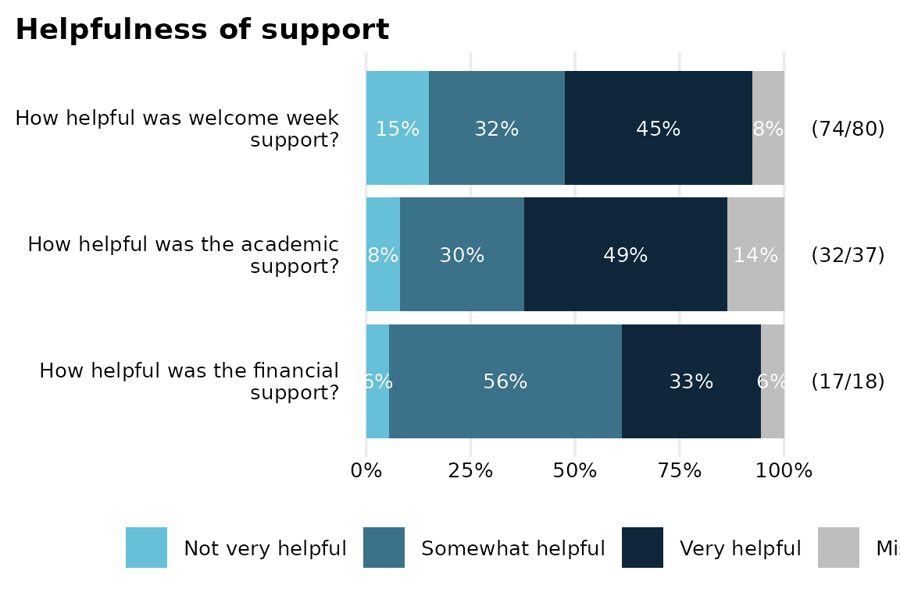
Other tweaking for stacked bar charts
Unless otherwise stated, these methods are applicable to plots
created with both OME_stacked_bar() and
summary_plot_stacked_bar().
Font size
There is a base_size option that works for both
OME_stacked_bar() and
summary_plot_stacked_bar(). The base size is given in
points and is the size of the title text, with axis/legend title text
0.85 times the base size and axis/legend label text 0.7 times that size.
The default 14 makes these sizes just under 12 and 11 points,
respectively. But for a presentation one might want to make all the text
a bit bigger:
helpful_ext |>
summary_plot_stacked_bar(
dat_format = "extended",
labels_vec = helpful_labels,
colo = helpful_colo,
base_size = 18
)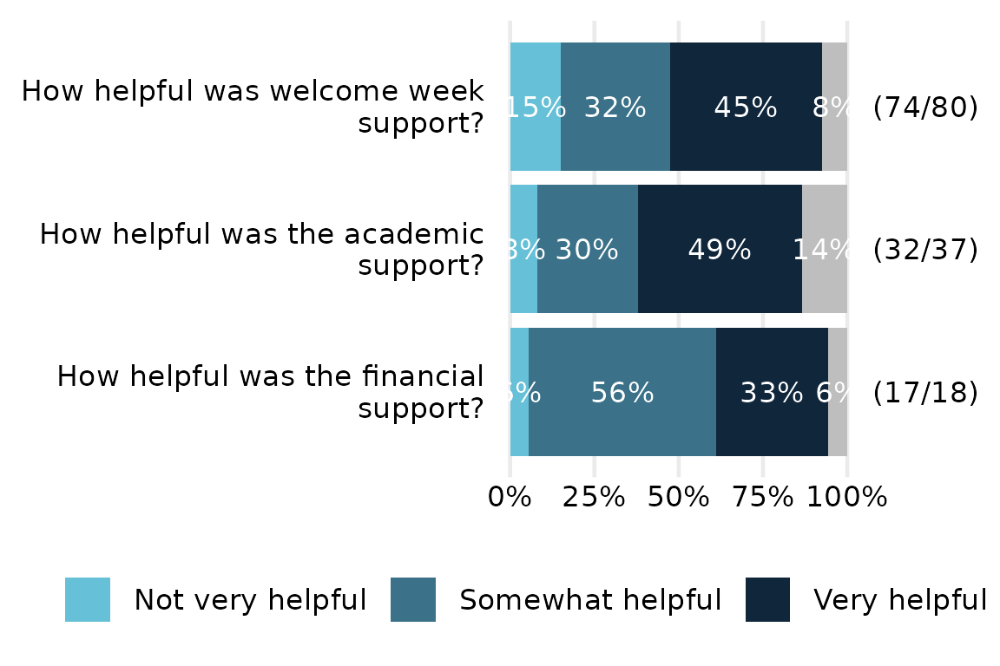
Label text wrapping
If labels are particularly long then changing the way they are wrapped can be helpful to make the plot easier to read. This is more likely to be an issue with larger text size too.
The group_label_width option is the target number of
characters used before breaking to a new line (with NULL
meaning ‘no line breaks’). The defaults are NULL for
OME_boxplot() and 30 for
summary_plot_boxplot(). For example:
helpful_ext |>
summary_plot_stacked_bar(
dat_format = "extended",
labels_vec = helpful_labels,
colo = helpful_colo,
group_label_width = 20
)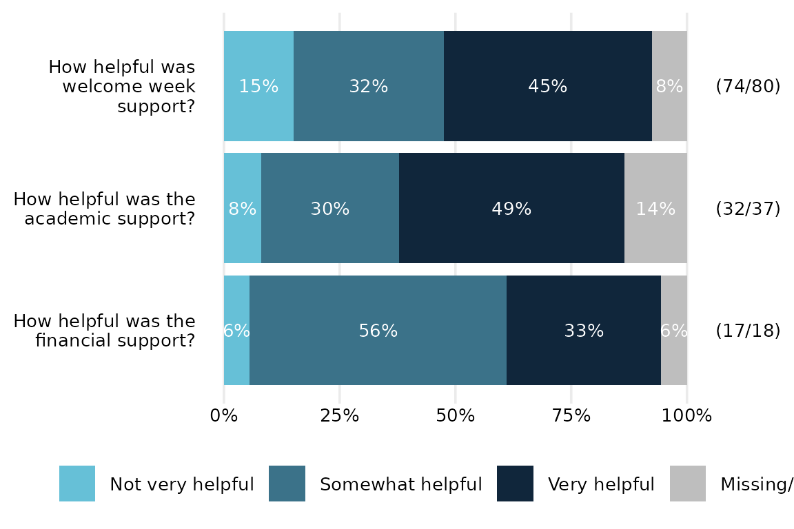
And fill_label_width does the same for the legend labels
(with default 20).
helpful_ext |>
summary_plot_stacked_bar(
dat_format = "extended",
labels_vec = helpful_labels,
colo = helpful_colo,
fill_label_width = 10
)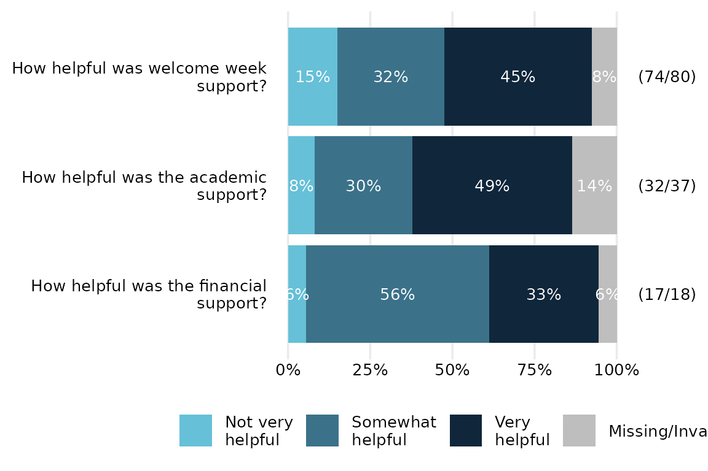
Legend positioning/alignment
There is another helpful trick available if the legend is below the
plot (i.e. spread out horizontally) and needs a bit more space: use the
legend.location option of the ggplot2 theme. The default is
‘panel’, which aligns the legend with the plotting panel only, but the
alternative ‘plot’ aligns it with the whole area of the figure:
helpful_ext |>
summary_plot_stacked_bar(
dat_format = "extended",
labels_vec = helpful_labels,
colo = helpful_colo
) +
theme(legend.location = 'plot')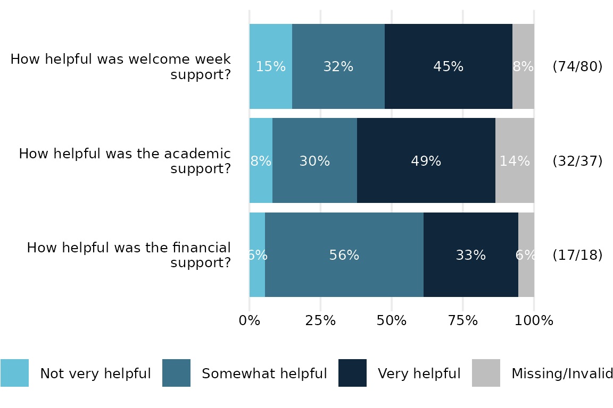
Numerical variables: boxplots
Single-question numeric plot with OME_boxplot()
OME_boxplot() is the numeric equivalent of
OME_stacked_bar(). It plots one numeric variable,
optionally broken down by a factor grouping variable. The main features
and options are very similar to those in OME_boxplot().
OME_boxplot(
data = survey_data,
value_var = study_hours,
group_var = school_type,
titleText = "Weekly study hours by school type"
)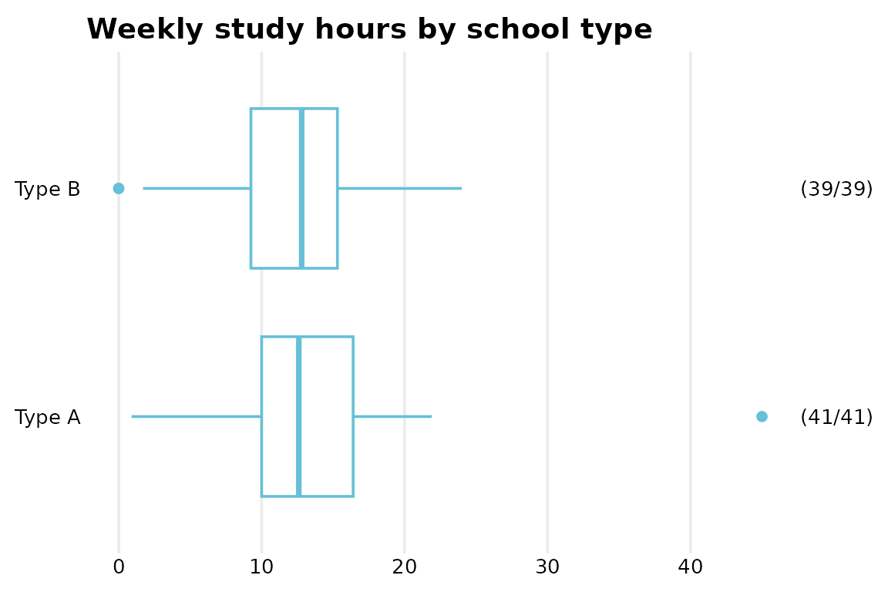
As with stacked bars, the data can be filtered before being passed to the plotting function (to allow for routing or simply to focus on a particular subset of respondents). Here I show how to use the colour argument to the function to control the colour of the boxplot.
survey_data |>
filter(gender=="Female") |>
OME_boxplot(
value_var = study_hours,
group_var = school_type,
titleText = "Weekly study hours by school type",
colour = "#2244AA"
)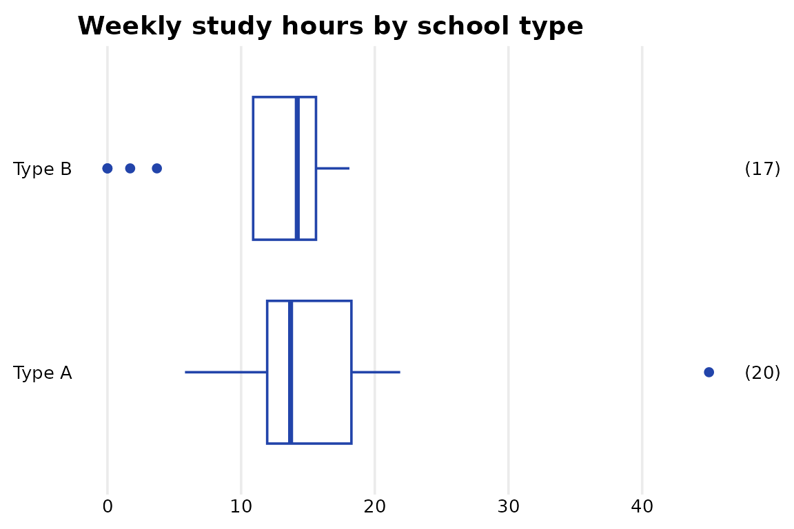
Multi-question numeric plot with
summary_plot_boxplot()
summary_plot_boxplot() summarises several numeric
questions in one horizontal boxplot. Here we compare study hours,
wellbeing, and confidence.
numeric_labels <- c(
wellbeing_score = "Wellbeing score",
confidence_score = "Confidence score"
)
survey_data |>
dplyr::select(study_hours, wellbeing_score, confidence_score) |>
summary_plot_boxplot(
labels_vec = numeric_labels,
titleText = "Numeric survey measures"
)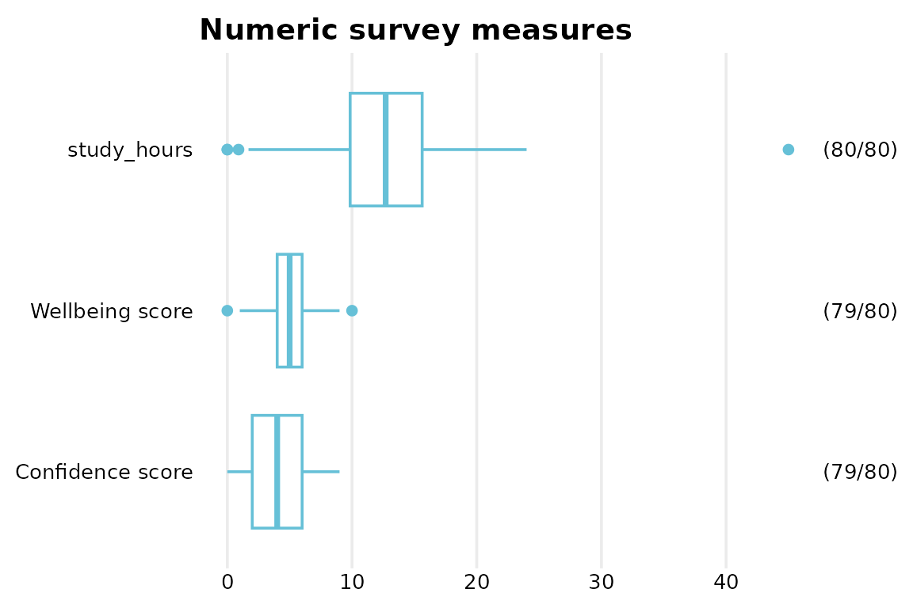
Ordering of questions
By default, the questions are ordered by their median value. To keep
the original variable order instead, set order_fun = NULL.
(mean also works here.)
survey_data |>
dplyr::select(wellbeing_score, confidence_score) |>
summary_plot_boxplot(
labels_vec = numeric_labels,
order_fun = NULL,
titleText = "Numeric survey measures in original order"
)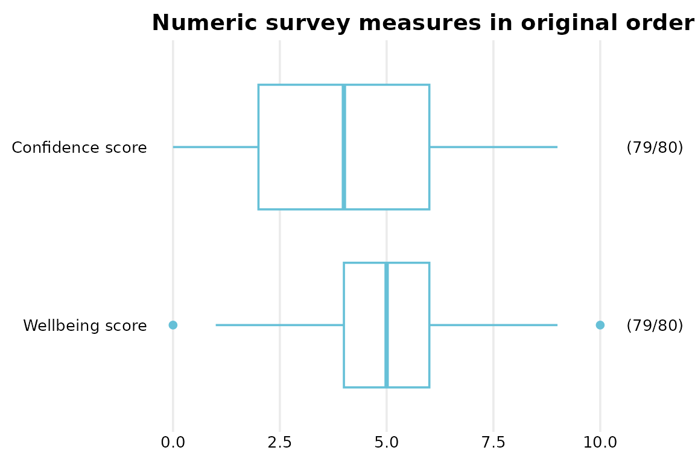
Dealing with survey routing
This is essentially the same as for the stacked bar charts. Use
make_extended_summary_plot_data() to take the survey data
and set up *_value, *_include and
*_plot columns for each variable, then
summary_plot_boxplot() to plot.
Other tweaking for boxplots
Unless otherwise stated, these methods are applicable to plots
created with both OME_boxplot() and
summary_plot_boxplot().
Font size
The base_size option works for boxplots too:
survey_data |>
OME_boxplot(
study_hours,
school_type,
base_size = 18
)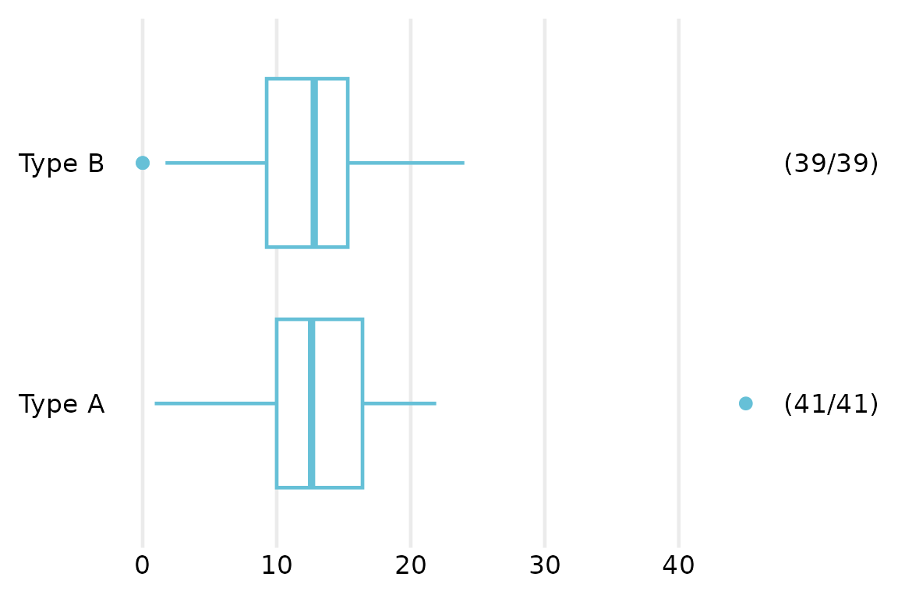
Label text wrapping
If labels are particularly long then changing the way they are wrapped can be helpful to make the plot easier to read. This is more likely to be an issue with larger text size too.
The group_label_width option controls how many
characters wide the grouping labels should be. For example:
survey_data |>
dplyr::select(wellbeing_score, confidence_score) |>
summary_plot_boxplot(
labels_vec = numeric_labels,
order_fun = NULL,
group_label_width = 10
)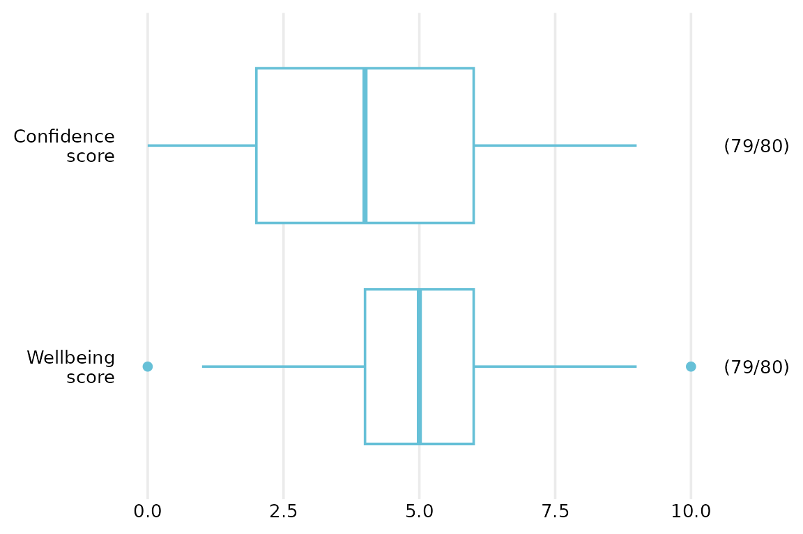
Setting scale limits and/or guide values
If the numerical variables being plotted are percentages then it
might make sense to insist that the scale runs from 0 to 100 and that
the guide lines should be at multiples of 25. Here’s an example where
manually specifying the scale doesn’t make much sense, but nevertheless
shows how it can be done. (Note that using just one of
coord_cartesian and scale_x_continuous will
work too.)
survey_data |>
OME_boxplot(
study_hours,
school_type
) +
coord_cartesian(xlim = c(0, 50)) +
scale_x_continuous(breaks = seq(0, 50, by = 12.5))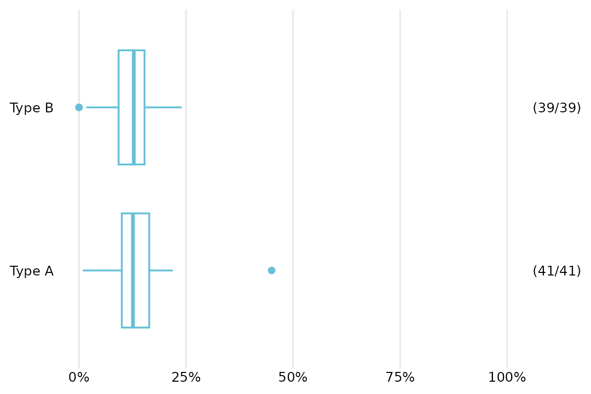
A generic theme and colour palettes
For other kinds of plots, I have made
- a ggplot2 theme that should make plots in an OME kind of way, and
- fill & colour scales that use the get_OME_colours() colour palettes.
Generic theme theme_OME()
If I make some other kind of plot and want it to be OME-ey, then I
can apply the theme OME_theme().
survey_data |>
ggplot(aes(x = confidence_score,
y = wellbeing_score)) +
geom_point(position = 'jitter',
alpha = 0.8) +
labs(x = "Confidence score",
y = "Wellbeing score") +
coord_cartesian(xlim=c(0,10), ylim=c(0,10)) +
theme_OME()
#> Warning: Removed 2 rows containing missing values or values outside the scale range
#> (`geom_point()`).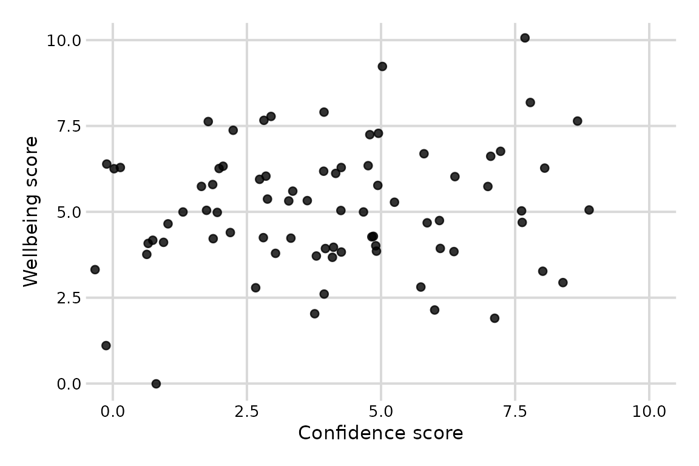
The theme is not meant to be prescriptive, but equally it is intended to be a strong steer re plot formatting. It should be fine most of the time, but certainly there will be some situations where it needs changing. Change should be avoided unless it’s necessary, but equally if it’s necessary to change then do it!
Colour and fill scales scale_colour_OME() and
scale_fill_OME()
And if I use colour then I can set the colour scale to be on-brand too. (This scale also encourages the OME-ey style by removing the title in the legend, by default.)
survey_data |>
ggplot(aes(x = confidence_score,
y = wellbeing_score,
colour = school_type)) +
geom_point(position = 'jitter',
alpha = 0.8) +
labs(x = "Confidence score",
y = "Wellbeing score") +
coord_cartesian(xlim=c(0,10), ylim=c(0,10)) +
theme_OME() +
scale_colour_OME()
#> Warning: Removed 2 rows containing missing values or values outside the scale range
#> (`geom_point()`).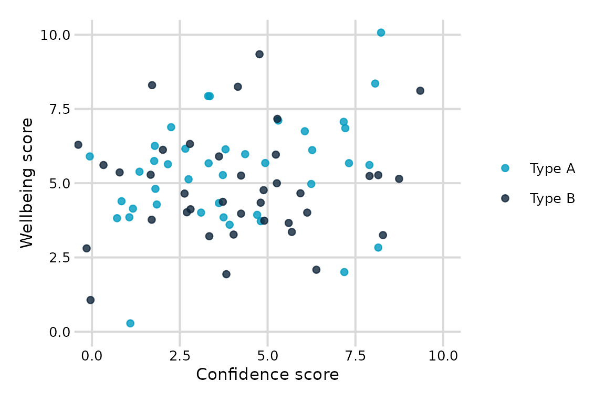
It defaults to using the ‘distinct’ palette, but the other options
(‘divergent’/‘sequential’) can work too, e.g. using
scale_colour_OME(type='sequential').
survey_data |>
ggplot(aes(x = confidence_score,
y = wellbeing_score,
colour = school_type)) +
geom_point(position = 'jitter',
alpha = 0.8) +
labs(x = "Confidence score",
y = "Wellbeing score") +
coord_cartesian(xlim=c(0,10), ylim=c(0,10)) +
theme_OME() +
scale_colour_OME(type='sequential')
#> Warning: Removed 2 rows containing missing values or values outside the scale range
#> (`geom_point()`).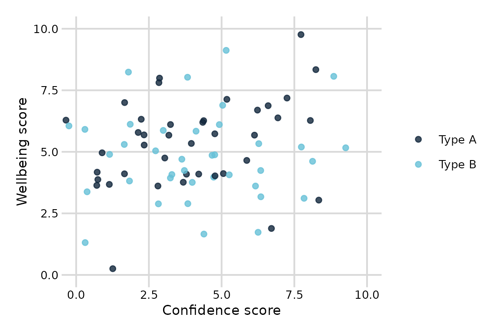
And the same sort of thing can be achieved for the fill
aesthetic:
survey_data |>
ggplot(aes(x = school_type,
fill = gender)) +
geom_bar() +
labs(x = NULL,
y = "Count") +
theme_OME() +
theme(panel.grid.major.x = element_blank()) +
scale_fill_OME()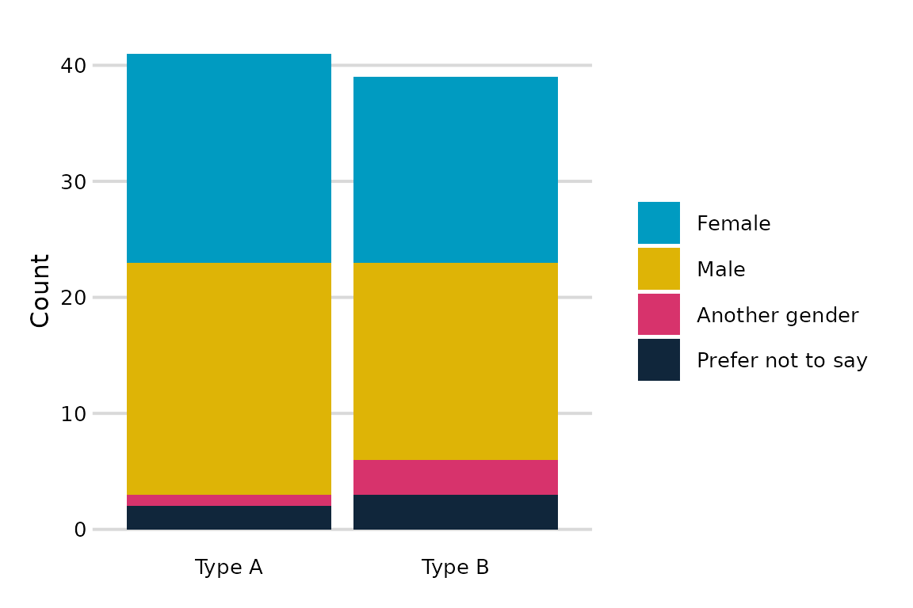
Other useful things
Advice re saving plots
Broadly speaking, I suggest saving in .svg (a vector graphics format) rather than .png/.jpeg (or a similar raster graphics format). Vector graphics are usually much smaller files, they can cope with moderate amounts of resizing without much complaint, and they contain the actual info needed to draw the plot not just a list of pixels and what colour they should be. The exception is for something with loads of different elements like a scatter plot with thousands of points - then a vector graphics file might be unreasonably large.
For plots made using ggplot,
ggsave("some_file_name.svg", width=4, height=5, units="in")will save the current plot in RStudio, or if you have the plot saved
in R (through something like my_plot <- make_plot(…)
then
ggsave("some_file_name.svg", my_plot, width=4, height=5, units="in")will do the job. The units can be changed to “cm” (or “mm” or “px” [pixels]) if you prefer.
If you need to use . png then you just need to (a) change the
filename to end “.png” instead of “.svg” and (b) add the option
dpi = 300. I.e.
ggsave("some_file_name.png", width=4, height=5, units="in", dpi=300)(And there’s the same ability to use the version with
my_plot if you have saved the plot in your R session.)
Note that these files will be saved in the current working directory.
If you use an RStudio project structure then this will probably be the
same directory that the .Rproj project file is in; but if in doubt you
can check using getwd() or provide a specific path to
ggsave(),
e.g. "C:/<all sorts of stuff>/some_file_name.svg",
instead of just a file name.
Sizing
When you make a plot you don’t know exactly how big you’ll want it to be - pagination in a document (especially a large one like RoME!) is often fluid right until the end. I suggest, in the first instance, relatively quickly picking a size that looks reasonable - accepting that, later on, re-saving with a different sizing might well be needed. All the more reason to keep code well-organised so it can easily be found/reviewed/tweaked/re-run.
Reordering factors
There is a nice way of reordering factors which is sometimes very
handy when making plots. For example, suppose we want (for some reason)
to do a catterpillar plot of every individual’s wellbeing score. A
caterpillar plot is just a scatterplot with fancy ordering (noting the
need to filter() to avoid NAs messing things
up):
survey_data |>
filter(!is.na(wellbeing_score)) |>
ggplot(aes(x = forcats::fct_reorder(respondent_id_asis, wellbeing_score),
y = wellbeing_score)) +
geom_point() +
labs(x = "Respondent",
y = "Wellbeing score") +
theme_OME() +
theme(panel.grid.major.x = element_blank()) +
scale_x_discrete(breaks=NULL)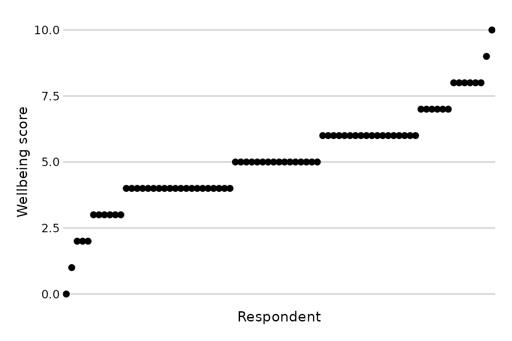
The fct_reorder() function can also do lots of other
cool things - the help provides a couple of examples.
Still coming…
There will also, in due course, be additional functions to do other common(ish)ly needed types of plots.
knitr::knit_exit()